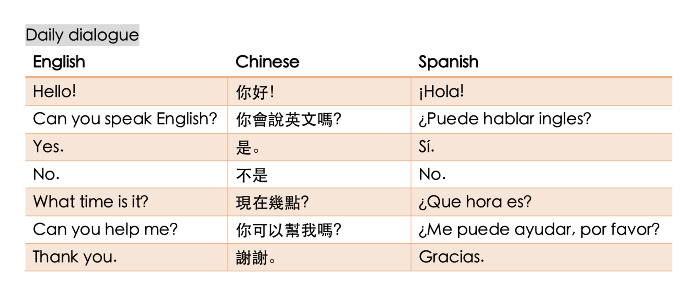
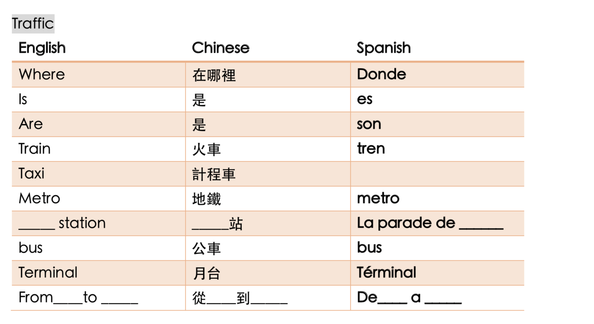

There are three reasons why you should choose Salamanca as your destination for the study tour in Spain. First, the oldest university in Spain, Universidad de Salamanca, is located in this city. Because of the location of the university, the main population of the city is the elderly and the students who study at the university. Due to the composition of the population, there aren’t many English speakers in this city, which makes Salamanca the best city for a beginner who knows basic vocabularies and grammar to practice their speaking ability. Second, comparing to other cities in Spain, Salamanca has a lower cost of living and better public security. At least you don’t have to worried about being robbed if you open the windows when you are asleep. Last but not least, being one of the oldest cities in Spain, the courses are taught in a more accurate pronunciation in this city. Therefore, for people who want to learn classic Spanish, Salamanca is the best choice of theirs.
Survival manual for an A1 Spanish speaker @ Salamanca, Spain
Why to choose the city?
When to go?
If you are a college student whose wish is to improve your Spanish as I did, the only choice of yours is to go there during summer vacation, which is a perfect time to go to Salamanca for a study tour (and for a vacation). Summer in Spain can be very torrid, the temperature is usually around 40 degrees centigrade at noon. Not to mention the fierce sun hanging in the sky, people tend to stay indoors during their lunch break. However, although the temperature can be very high under the sun, the temperature in the shadow is relatively low (around 19℃ based on my experience). Because of the temperature difference, it is normal that the accommodation where you stay during your study tour is without AC. Besides, because of the Mediterranean climate, it is usually hot and dry during the daytime. Comparing to the weather in Hsinchu (where the writer has lived for 21 years) it is way more comfortable living in Salamanca.
For those who love shopping, I strongly recommend you to go in January or July, which is the discount season in Spain. When you can buy those clothes, accessories, and make-ups at half of the price, why would you choose to buy it at its original price and pay an extra shipping fee? To sum, in my opinion, the best time to go to Salamanca is in July.
What to do?
For an A1 speaker, the most important thing that you should do is to find a place to learn Spanish. There are many language schools for you to choose from. Since Salamanca is a small city, you will not have to worry about how far the language school is. However, I will still suggest you choose a school which is near your accommodation if possible. In that case you can spend more time exploring the city than wondering on the street when you get lost. As an A1 speaker, it is impossible for one to speak Spanish like a native speaker and remember every word that you might have to use in your daily life. Therefore, when you arrive the city, the first thing that you have to do is to find yourself a place to apply for a SIM card and keep your online dictionary with you all the time. If you are a person who cannot live without the internet, my suggestion for you is to get a SIM card from your country and charge the SIM card via the website or at the nearest mobile shop in the airport. However, if you forgot to buy it before your trip, here’s some useful vocabularies for you.
 
After you have arrived your destination and solve your internet problem, there are several places that you should mark on your map.
I. La Plaza Mayor:
All roads lead to La Plaza Mayor, there’s nothing else to explain.
II. Carrefour
There are no 7-11s and Family marts in Salamanca, nor are there 24hrs MacDonald’s in this city. If you are used to the convenience stores that will open 7 days a week 24 hours a day, you will have to get used to a place where the stores will be closed at 10 pm and the whole Sunday. Except for one place…... “Carrefour Express”, the only store that will open on Sunday and the only place you can get food after 10pm.